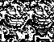

<HTML>
<head>
<title>(k)NOW.. 'tis thy/me:end treason.. WAK'EM UP !!!</title></head>

<BODY BGCOLOR="#000000" BACKGROUND="images/tanquid.gif" 
TEXT="#FFFF00" ULINK="#FFFF00" link="#FFFF00" VLINK="#FFFF00"
>
<center>
<br>
?BACK<a href="index.html">0UT!</a><br>
</center>
<A HREF="http://www.wavenet.com/~tomcat">tHERE, </A>
<a href="RAMTANK.TXT">sum </a>
<A HREF="http://www.phonetic.com/">(mm)</A>
<A HREF="http://www.halcyon.com/colinp/bohemian">haight</A>
<a href="http://www.eskimo.com/~wyiwndr/"> WNDR, </a> <br>

<a href="knowtv.htm">:</a>
<strong><a href="analag.html">uhmn</a>... warning.. <br>
LOTS of strange mistlinks are added..<br>
 have fun finding them :0)<br>
<a href="http://www.tribal.com/going.htm">"What's </a><a
href="http://www.spiritweb.org/Spirit.html">THAT? </a><br>
<a href="analag.html">Like...</a><a href="cat.html">GOing</a><a
href="r1ght.html"> s0HMwhere?" </a>
 <H1>WAKE UP !<FONT SIZE="6" ALIGN="topcenter"></H1> <PRE

<blink>This <a href="jjtdance.html">jest</a> is <a href="jjtjudge.html">
just</a> an <a href="tank2sno.html">adjust </a> test <a
href="thinktankz.html">text </a>texture</blink>
 <br><hr width=50% size=4> If you have <a 
href="0th1nk.html"><b>THINK</a><a href="th1nk0">_TANK</b></a> C'MON INNErds !<br> but actually, I <a
href="jjtwatch.html"> JEST! </a>
</center><br>
 <a href="sknow.html"> (k)NOW: </a>
 white noise:<br>
     is never still.<br>
     noise lives not in stasis:<br>
 WHITE is alive with color:<br>

<a href="http://www.nothingness.org/"> whitenoise's</a> sight/sound  is:<A
HREF="http://www.eskimo.com/~wakemup/port/br10n/0RdeR1NG/1skn0w/Room.gif"><b>BIG</b></a><br>
</A><br>
a <a href="http://www.neo-tech.com/zonpower/book/chapters/chapter1.html">
Googolplex</a> <a href="http://www.links.net/www/icandy.html"> even!!!</a> <BR>
<a href="http://www.eskimo.com/~nanook/">Snowland </a><br>
is so <a href="lonevictank.html">V </a>v  A a <a
href="http://www.squishy.com/"> S</a> s T t ; <br>
 ssssSSSSOOOooo much mucher... U may ascii..<br>
<a href="thinktanky.html"> "WHY </A>
<a href="http://www.wmin.ac.uk/~xhlec">ALL </a> <a
href="http://www.intersex.com/free.html"> this...</a> <a
href="http://www.intersex.com/free.html">this </a>
<a href="http://metro.turnpike.net/mirsky/Worst.html">CRAPPY </a>
<a href="http://www.suck.com/">SUCKstuffing </a>of <a href
="http://www.nada.kth.se/~nv91-asa/weirdness/">weird, </a> <br> <a
href="http://www.nada.kth.se/~nv91-asa/magick.html">weirder, </a> <br>
<a href="http://www.spiritweb.org/Urantia/index.html"> weirdest </a> <br>
<a href="http://www.leba.net/~dtstrs/occult.html">paganistic </a>
<a href="images/danbernn.jpg">RunaDAN</a>
 <a href="port/DanBern.html"> BERNstuff? </a> 
<a href="http://www.eskimo.com/~wyiwndr/dan_bern.html"></a>

(maybe more to it than fits in a fit in here.) <br>
<a href="http://www.welcomehome.org/rainbow.html">WELCOME HOME !</a><br>
    
<a href="mailto:wakemup@eskimo.com">typo me..</a>
<FONT SIZE="5">
(maybe <a href="fable_list.html">M0RE</a> to it; then? Fit in here.)          
<pre>'Tis WRIT:
 When creating indescribably new  things ,
  create  new  words
   to describe them with . 
		But . .
 When re-creating overtly enscribed old thoughts;
	 desecrate old words and re-D-fine them. 
computerease "data"= in(s)cripted terms that
 in/form w/out waste
 of space/time describing  givens.

Latin was  this;

  A shortened mix of former words.  
   one syllable "words"
  that represented  different  contents (meanings),
 dependent on surrounding three letter word/phrases 
for context . 
		So.
		(s)know ...
Tis TIME to re-create latin
for the computering MASSES
</PRE></FONT></H1>
<p><H2><a href="shit.html"> SHit!
</a> <a href="pulp0.html">/Write\
</a> <a href="anim8ioneers.html">Downer. </a> <a 
href="1lastank.html">nebber </a> make a moo cow</H2>
<FONT="2">Thanks for dropping thru!</FONT>
<p><a href="http://www.cyborganic.com/green/crossroads.html"></a></BODY>
</HTML>

